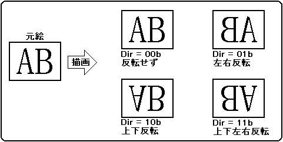

★HARDWARE Manual
★VDP1ユーザーズマニュアル
★HARDWARE Manual
★VDP1ユーザーズマニュアル
| ビット | 15 | 14 | 13 | 12 | 11 | 10 | ９ | ８ |
７ | ６ | ５ | ４ | ３ | ２ | １ | ０ |
| CMDCTRL +00H |
END | JP | ZP | 0 | 0 | Dir | Comm | |||||||||
END | Comm | 機能 | コマンド | ||||
ビット15 | 3 | 2 | 1 | 0 | |||
0 | 0 | 0 | 0 | 0 | 描画 | テクスチャ |
定形スプライト描画コマンド |
0 | 1 | 矩形スプライト描画コマンド | |||||
1 | 0 | 変形スプライト描画コマンド | |||||
1 | 0 | 0 | ノンテクスチャ | ポリゴン描画コマンド | |||
0 | 1 | ポリライン描画コマンド | |||||
1 | 0 | ライン描画コマンド | |||||
1 | 0 | 0 | 0 | 座標設定 | クリッピング座標 |
ユーザクリッピング座標設定コマンド | |
1 | システムクリッピング座標設定コマンド | ||||||
1 | 0 | 相対座標設定コマンド | |||||
1 | 0 0 0 0 | 描画終了コマンド | |||||
上記以外のコード | 設定禁止（設定しないでください） | ||||||
ZP | コード | ズームポイント | |||
ビット11 | 10 | 9 | 8 | ||
0 | 0 | 0 | 0 | 0H | 座標2点指定 |
0 | 1 | 0 | 1 | 5H | 上辺の左端 |
0 | 1 | 1 | 0 | 6H | 上辺の中央 |
0 | 1 | 1 | 1 | 7H | 上辺の右端 |
1 | 0 | 0 | 1 | 9H | 中央の左端 |
1 | 0 | 1 | 0 | AH | 中央の中央 |
1 | 0 | 1 | 1 | BH | 中央の右端 |
1 | 1 | 0 | 1 | DH | 下辺の左端 |
1 | 1 | 1 | 0 | EH | 下辺の中央 |
1 | 1 | 1 | 1 | FH | 下辺の右端 |
 |
厳守★上記以外の設定は禁止です。 |
＋１ ＋２ ＋３ ┃ ┌─┬─┬─┬─╂─┬─┬─┬─┐ ＋４ │■│ │ │■┃ │ │ │■│ ├─┼─┼─┼─╂─┼─┼─┼─┤ │ │ │ │ ┃ │ │ │ │ ├─┼─┼─┼─╂─┼─┼─┼─┤ │ │ │ │ ┃ │ │ │ │ ├─┼─┼─┼─╂─┼─┼─┼─┤ │ │ │ │ ┃ │ │ │ │ ├─┼─┼─┼─╂─┼─┼─┼─┤ │ │ │ │ ┃ │ │ │ │ ├─┼─┼─┼─╂─┼─┼─┼─┤ ＋８ ┿■┿━┿━┿■╋━┿━┿━┿■┿ 中心線 ├─┼─┼─┼─╂─┼─┼─┼─┤ │ │ │ │ ┃ │ │ │ │ ├─┼─┼─┼─╂─┼─┼─┼─┤ │ │ │ │ ┃ │ │ │ │ ├─┼─┼─┼─╂─┼─┼─┼─┤ │ │ │ │ ┃ │ │ │ │ ├─┼─┼─┼─╂─┼─┼─┼─┤ │ │ │ │ ┃ │ │ │ │ ├─┼─┼─┼─╂─┼─┼─┼─┤ ＋Ｃ │■│ │ │■┃ │ │ │■│ └─┴─┴─┴─╂─┴─┴─┴─┘ ┃ 中心線 これら縦、横の値を加えたものがズームポイントの値 となります
15 | 14 | 13 | 12 | 11 | 10 | ９ | ８ |
７ | ６ | ５ | ４ | ３ | ２ | １ | ０ | ||
| CMDXA | +0CH | 符号拡張 | 不動点,X座標(XA) | ||||||||||||||
| CMDYA | +0EH | 符号拡張 | 不動点,Y座標(YA) | ||||||||||||||
| CMDXB | +10H | 符号拡張 | 表示,X座標(XB) | ||||||||||||||
| CMDYB | +12H | 符号拡張 | 表示,Y座標(YB) | ||||||||||||||
15 | 14 | 13 | 12 | 11 | 10 | ９ | ８ |
７ | ６ | ５ | ４ | ３ | ２ | １ | ０ | ||
| CMDXA | +0CH | 符号拡張 | 頂点(A),X座標(XA) | ||||||||||||||
| CMDYA | +0EH | 符号拡張 | 頂点(A),Y座標(YA) | ||||||||||||||
| +10H | ： | ||||||||||||||||
| +12H | ： | ||||||||||||||||
| CMDXC | +14H | 符号拡張 | 頂点(C),X座標(XC) | ||||||||||||||
| CMDYC | +16H | 符号拡張 | 頂点(C),Y座標(YC) | ||||||||||||||
┌────────────────→左端が不動点、左端＝ＸＡ │ 右端＝ＸＡ＋ＸＢ │ │ ┌──────────→中央が不動点、左端＝ＸＡ−ＸＢ／２ │ │ 右端＝ＸＡ＋（ＸＢ＋１）／２ │ │ │ │ ┌───右端が不動点、左端＝ＸＡ−ＸＢ │ │ │ 右端＝ＸＡ │ │ │ ┌─┬─┬─┬─┬─┬─┬─┬─┐ │■│ │ │■│ │ │ │■│─→上辺が不動点、上辺＝ＹＡ ├─┼─┼─┼─┼─┼─┼─┼─┤ 下辺＝ＹＡ＋ＹＢ │ │ │ │ │ │ │ │ │ ├─┼─┼─┼─┼─┼─┼─┼─┤ │ │ │ │ │ │ │ │ │ ├─┼─┼─┼─┼─┼─┼─┼─┤ │ │ │ │ │ │ │ │ │ ├─┼─┼─┼─┼─┼─┼─┼─┤ │ │ │ │ │ │ │ │ │ ├─┼─┼─┼─┼─┼─┼─┼─┤ │■│ │ │■│ │ │ │■│─→中央が不動点、上辺＝ＹＡ−ＹＢ／２ ├─┼─┼─┼─┼─┼─┼─┼─┤ 下辺＝ＹＡ＋（ＹＢ＋１）／２ │ │ │ │ │ │ │ │ │ ├─┼─┼─┼─┼─┼─┼─┼─┤ │ │ │ │ │ │ │ │ │ ├─┼─┼─┼─┼─┼─┼─┼─┤ │ │ │ │ │ │ │ │ │ ├─┼─┼─┼─┼─┼─┼─┼─┤ │ │ │ │ │ │ │ │ │ ├─┼─┼─┼─┼─┼─┼─┼─┤ │■│ │ │■│ │ │ │■│─→下辺が不動点、上辺＝ＹＡ−ＹＢ └─┴─┴─┴─┴─┴─┴─┴─┘ 下辺＝ＹＡ ［注］小数点以下は切り捨て
ＺＰ＝０ （１００，５０） ┏━━━━━━━━┓ ┃ ┃ ┃ ┃ ┃ ┃ ┃ ┃ ┃ ┃ ┗━━━━━━━━┛ （１４０，８０） ＺＰ＝５Ｈ ＺＰ＝６Ｈ ＺＰ＝７Ｈ （１００，５０） （１４０，５０） （８０，５０ （１２０，５０） （６０，５０ （１００，５０） ┏┿━━━━━━━┓ ┏━━━┿━━━━┓ ┏━━━━━━━┿┓ ╂■───────╂ ╂───■────╂ ╂───────■╂ ┃│ ┃ ┃ │ ┃ ┃ │┃ ┃│ ┃ ┃ │ ┃ ┃ │┃ ┃│ ┃ ┃ │ ┃ ┃ │┃ ┃│ ┃ ┃ │ ┃ ┃ │┃ ┗┿━━━━━━━┛ ┗━━━┿━━━━┛ ┗━━━━━━━┿┛ （１００，８０） （１４０，８０） （８０，８０） （１４０，８０） （６０，８０） （１００，８０） ＺＰ＝９Ｈ ＺＰ＝ＡＨ（１０） ＺＰ＝ＢＨ（１１） （１００，３５） （１４０，３５） （８０，３５ （１２０，３５） （６０，３５ （１００，３５） ┏┿━━━━━━━┓ ┏━━━┿━━━━┓ ┏━━━━━━━┿┓ ┃│ ┃ ┃ │ ┃ ┃ │┃ ┃│ ┃ ┃ │ ┃ ┃ │┃ ╂■───────╂ ╂───■────╂ ╂───────■╂ ┃│ ┃ ┃ │ ┃ ┃ │┃ ┃│ ┃ ┃ │ ┃ ┃ │┃ ┗┿━━━━━━━┛ ┗━━━┿━━━━┛ ┗━━━━━━━┿┛ （１００，６５） （１４０，６５） （８０，６５） （１４０，６５） （６０，６５） （１００，６５） ＺＰ＝ＤＨ（１３） ＺＰ＝ＥＨ（１４） ＺＰ＝ＦＨ（１５） （１００，２０） （１４０，２０） （８０，２０ （１２０，２０） （６０，２０ （１００，２０） ┏┿━━━━━━━┓ ┏━━━┿━━━━┓ ┏━━━━━━━┿┓ ┃│ ┃ ┃ │ ┃ ┃ │┃ ┃│ ┃ ┃ │ ┃ ┃ │┃ ┃│ ┃ ┃ │ ┃ ┃ │┃ ┃│ ┃ ┃ │ ┃ ┃ │┃ ╂■───────╂ ╂───■────╂ ╂───────■╂ ┗┿━━━━━━━┛ ┗━━━┿━━━━┛ ┗━━━━━━━┿┛ （１００，５０） （１４０，５０） （８０，５０） （１４０，５０） （６０，５０） （１００，５０）
Dir | 反転処理 | |
Y | X | |
|---|---|---|
0 | 0 | 反転しません |
0 | 1 | 左右反転します |
1 | 0 | 上下反転します |
1 | 1 | 上下左右反転します |
図6.4 キャラクタ読み出し方向

★HARDWARE Manual
★VDP1ユーザーズマニュアル